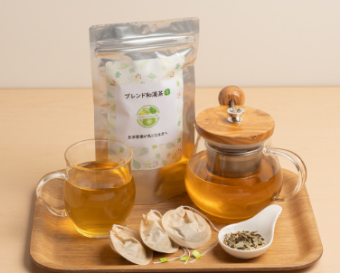
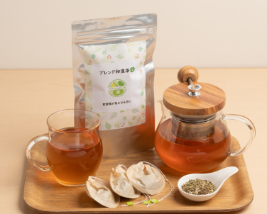
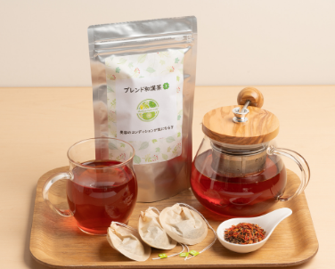

生活習慣が気になる方におすすめです
血管を拡げて血流を改善する作用があるといわれており,高血圧や動脈硬化などの生活習慣病の予防にも効果が期待できます
金木犀のやさしい香りでリラックス効果、鎮静作用もあるので血圧を下げることが期待できます。
毛細血管を強化し血行を促進する作用があるといわれているため、生活習慣病を予防する効果が期待できます。
食習慣が気になる方におすすめです
糖の吸収を防ぎ、血糖値を安定させる作用があるので、血糖値の急上昇を抑えることが期待できます。
「アーユルヴェーダ」でも使用されてきた歴史をもち、コレステロール値や血糖値を下げる効果が期待できます。
心を落ち着けるGABAなど高い栄養価があり、食前に飲むと、食事での糖質の吸収を緩やかにする効果が期待できます。
美容のコンディションが気になる方におすすめです
昔から腎臓に効くといわれてきました。その他にもアンチエイジングや美肌効果も期待できます。
南国の恵み豊かな太陽をたっぷりと浴びているため、栄養を豊富に含んでいます。ダイエットや美肌効果が期待できます。
血管を拡げて血流を改善する作用があるといわれており,高血圧や動脈硬化などの生活習慣病の予防にも効果が期待できます。